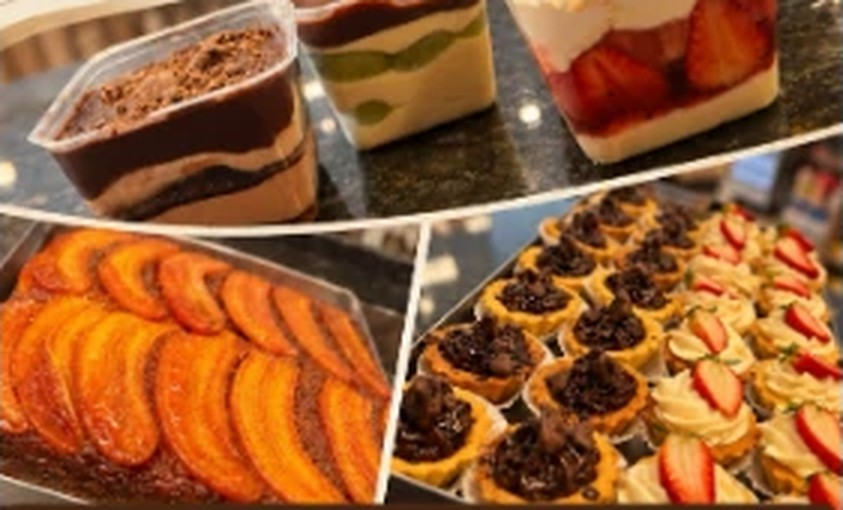

Doces e sobremesas
Sobremesas, tortinhas e bolos fresquinhos pra adoçar o seu dia.
Referência no Capão Raso e região
Bem-vindo à
Padaria e confeitaria referência no bairro Capão Raso e região. Sobremesas, tortinhas, bolos e salgados fresquinhos todos os dias, feitos com cuidado em cada detalhe para tornar a sua experiência ainda melhor.
Nossos produtos

Sobremesas, tortinhas e bolos fresquinhos pra adoçar o seu dia.
Bolos decorados para aniversários e comemorações.
Salgados e pães para o café da manhã ou o lanche da tarde.
Encomendas
Bolos, doces e salgados para festas e reuniões. Chame no WhatsApp e conte o que você precisa.
Pedir pelo WhatsAppContato
Segunda a sábado
6h30 às 19h30